EXP3_P3_Accel_8pt_FRFs_only.unv.
1 2 3 5 8 7 6 4 1, Add line. Then the editor's File → Save → Data Manager (also saved as EXP3_P3_Geometry_8pt_XModalWME.ufb).
EXP3_P3_Frame_Accel_8pt_withGeo, then File → Export → File….


Aluminum cut-out frame P3 (23.84 × 12 × 0.50 in), Lab Day 2 (10/20). Accelerometer at the planned spot next to corner 3 (x = 23.1, y = 2.1 in — confirm); hammer roved over 8 points. The frame sat on tennis balls near the corners.
Result: 6 modes identified in 125–742 Hz — 4 by the Pole Wizard, 2 by hand. Data: 8 FRFs, 801 lines, Δf = 3.906 Hz, 0–3125 Hz.
| Mode | Shape | X-Modal f (Hz) | ζ (%) | Picked by | NX free-free (Hz) | Δ | MAC vs NX |
|---|---|---|---|---|---|---|---|
| 1 | mode 1 (all corners) | 149.83 | 5.11 | hand | 150.12 | -0.2 % | 0.962 |
| 2 | mode 2 (diagonal twist) | 169.51 | 5.80 | hand | 159.27 | +6.4 % | 0.977 |
| 3 | mode 3 | 346.69 | 1.82 | Wizard | 347.1 | -0.1 % | 0.986 |
| 4 | mode 4 | 421.40 | 1.50 | Wizard | 428.5 | -1.7 % | 0.993 |
| 5 | mode 5 | 557.11 | 1.26 | Wizard | 558.8 | -0.3 % | 0.985 |
| 6 | mode 6 | 697.04 | 1.32 | Wizard | 706.6 | -1.4 % | 0.992 |
| Subfolder | Contents | Files |
|---|---|---|
01_Raw_Data | the lab .mat files exactly as recorded + raw-data inventory CSV + raw FRF plots | 11 |
02_Grid_Geometry | wireframe/geometry files, grid map, point coordinates | 7 |
03_XModal_Input | the relabelled .unv / .mat files that were imported into X-Modal | 3 |
04_Wizard_and_Fit | consistency diagrams (Wizard and final picks), FRF synthesis, mode table CSV, hand-vs-Wizard plot | 5 |
05_Mode_Shapes_Animations | X-Modal .mov recordings, 3 s .gif loops, peak-deflection stills, all-modes panel | 19 |
06_Coherence | coherence for every point, coherence summary map | 2 |
07_NX_Comparison | test vs NX frequency table and plot, MAC matrix, shape-by-shape comparison | 4 |
8 points around the frame (x from the wide 6.8 in band, y from the wide 4.1 in band). Day-2 numbering: 1 (0.9, 0.9), 2 (13.0, 0.9), 3 (22.95, 0.9), 4 (0.9, 6.0), 5 (22.95, 6.0), 6 (0.9, 11.1), 7 (13.0, 11.1), 8 (22.95, 11.1). Points 4 and 5 were added in the lab; plan points 4–6 were renumbered 8, 7, 6. Node 9 = accelerometer. Traceline 1-2-3-5-8-7-6-4-1.
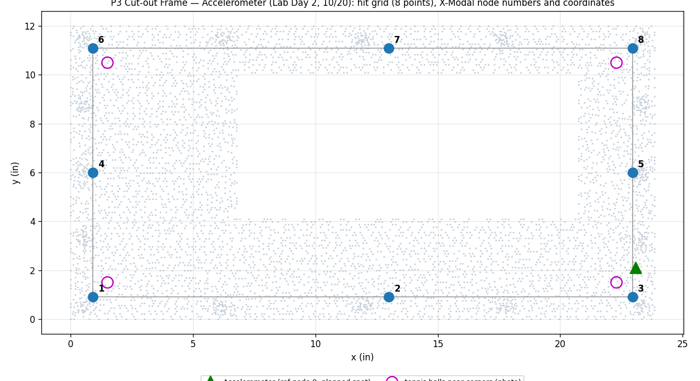
| Node | x (in) | y (in) | Raw file |
|---|---|---|---|
| 1 | 0.900 | 0.900 | Acc1x1.mat |
| 2 | 13.000 | 0.900 | Acc2.mat |
| 3 | 22.950 | 0.900 | Acc3.mat |
| 4 | 0.900 | 6.000 | Acc4.mat |
| 5 | 22.950 | 6.000 | Acc5.mat |
| 6 | 0.900 | 11.100 | Acc6.mat |
| 7 | 13.000 | 11.100 | Acc7.mat |
| 8 | 22.950 | 11.100 | Acc8.mat |
Each .mat in 01_Raw_Data (from Lab Data/EXP3/LabDay2/Rectcutout) is one hit point, saved by V-Acquisition into a MATLAB cell array called UFCELLS with 4 Universal-File datasets: two 151 headers (program names: V-Acquisition, ver. Beta 1), one 164 units record (“British (lbf,g*s^2,F”), one 58 FRF (type 4: complex H(f), 801 lines from 0 to 3125 Hz, Δf = 3.90625 Hz, ordinate Volts/Volts — the calibration is 1 V/V so the values are raw voltage ratios) and one 58 coherence (type 6, real 0–1). The response/reference labels in every file are the defaults CHAN 2 / CHAN 1, which is why the files were relabelled before X-Modal (see the Python section). Acc1x1.mat → point 1, AccN.mat → point N.
| Pt | File | Recorded | Raw labels (resp / ref) | Lines | Median γ² | Min γ² |
|---|---|---|---|---|---|---|
| 1 | Acc1x1.mat | 20Oct2026 10:29:00 | CHAN 2 dir0 / CHAN 1 dir0 | 801 | 0.995 | 0.121 |
| 2 | Acc2.mat | 20Oct2026 10:30:33 | CHAN 2 dir0 / CHAN 1 dir0 | 801 | 0.978 | 0.295 |
| 3 | Acc3.mat | 20Oct2026 10:32:25 | CHAN 2 dir0 / CHAN 1 dir0 | 801 | 0.972 | 0.067 |
| 4 | Acc4.mat | 20Oct2026 10:34:11 | CHAN 2 dir0 / CHAN 1 dir0 | 801 | 0.966 | 0.122 |
| 5 | Acc5.mat | 20Oct2026 10:35:59 | CHAN 2 dir0 / CHAN 1 dir0 | 801 | 0.993 | 0.016 |
| 6 | Acc6.mat | 20Oct2026 10:38:14 | CHAN 2 dir0 / CHAN 1 dir0 | 801 | 0.992 | 0.045 |
| 7 | Acc7.mat | 20Oct2026 10:39:11 | CHAN 2 dir0 / CHAN 1 dir0 | 801 | 0.99 | 0.028 |
| 8 | Acc8.mat | 20Oct2026 10:40:42 | CHAN 2 dir0 / CHAN 1 dir0 | 801 | 0.988 | 0.039 |
Full inventory: 01_Raw_Data/P3_Accel_raw_data_inventory.csv.
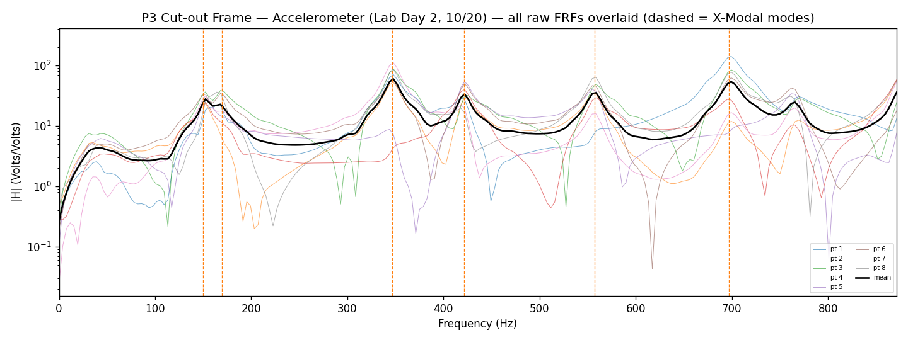
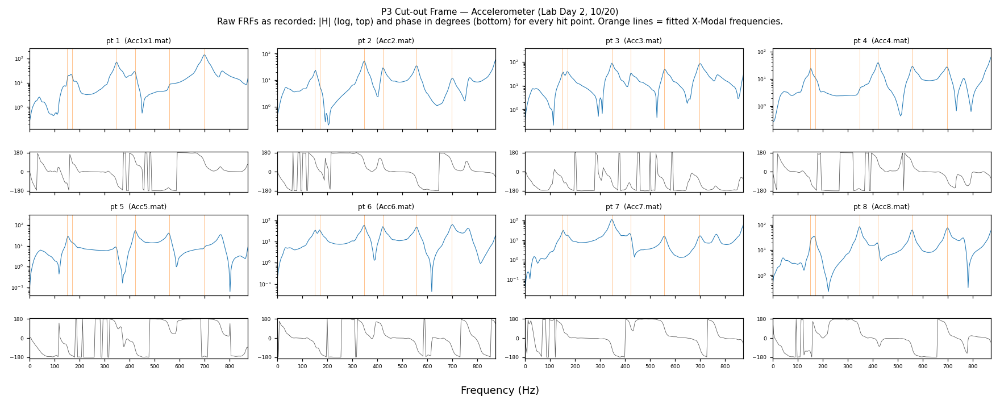
What coherence is. For every hit point the analyzer averaged several hammer hits (ensembles). Coherence γ²(f) = |Gxy|² / (Gxx·Gyy) compares the averaged cross-spectrum of hammer force (x) and sensor response (y) with their auto-spectra. It answers: “at this frequency, how much of the measured response is explained linearly by the measured hammer force?” γ² = 1 means every hit gave the same input–output relationship (clean, repeatable, linear); γ² near 0 means the response at that frequency was mostly noise or something not caused by the force.
How to read it here. High coherence (≥0.9) at the resonance peaks is what matters, because that is where the modal fit gets its information. Dips are normal and expected at anti-resonances and at points that sit on a nodal line of a mode (almost no response, so the signal is buried in noise). Broad low-coherence bands across many frequencies usually mean a bad set of hits (double hits, hammer skidding, too-soft/too-hard tip), the plate rattling on its supports, or sensor/cable noise. Coherence only tells you about repeatability of the measurement – not whether the sensor was in a good place, and not whether the fit is right.
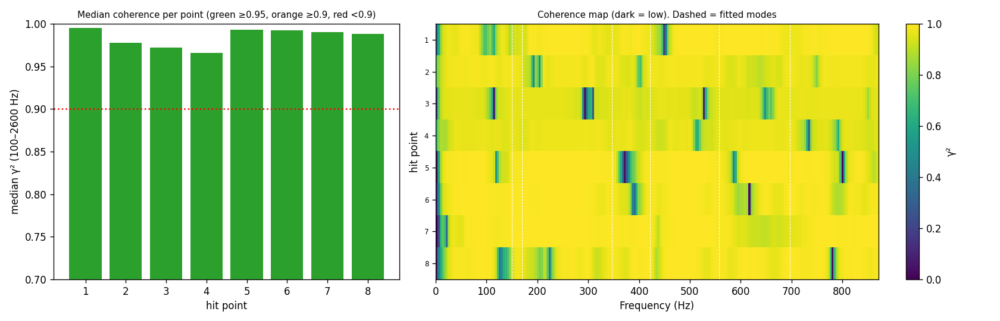
| Pt | M1 150 | M2 170 | M3 347 | M4 421 | M5 557 | M6 697 |
|---|---|---|---|---|---|---|
| 1 | 0.90 | 0.95 | 0.97 | 0.96 | 0.99 | 0.98 |
| 2 | 0.98 | 0.96 | 0.98 | 0.98 | 0.98 | 0.98 |
| 3 | 0.96 | 0.97 | 0.95 | 0.95 | 0.95 | 0.96 |
| 4 | 0.97 | 0.95 | 0.96 | 0.96 | 0.96 | 0.98 |
| 5 | 0.99 | 0.99 | 0.99 | 0.99 | 0.99 | 0.99 |
| 6 | 1.00 | 1.00 | 0.99 | 0.99 | 0.99 | 1.00 |
| 7 | 1.00 | 1.00 | 1.00 | 0.99 | 0.99 | 0.95 |
| 8 | 0.92 | 0.98 | 0.99 | 1.00 | 0.99 | 1.00 |
Reading this table. Every point has γ² ≥ 0.8 at every fitted mode.
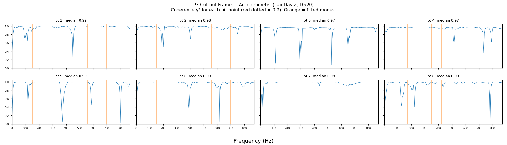
Follow these in order to reproduce the fit. Screenshots are in XModal_Results/00_Walkthrough_Screenshots (taken on P1 and P3; the menus are identical for every plate). The full illustrated walkthrough is 00_XModal_Walkthrough.html.
EXP3_P3_Accel_8pt_FRFs_only.unv.1 2 3 5 8 7 6 4 1, Add line. Then the editor's File → Save → Data Manager (also saved as EXP3_P3_Geometry_8pt_XModalWME.ufb).EXP3_P3_Frame_Accel_8pt_withGeo, then File → Export → File….What the Pole Wizard does. After the green start button, X-Modal fits the FRFs again and again at increasing model order (rows 1–20 of the consistency diagram). A pole that keeps showing up at the same frequency, damping and mode shape as the order rises is a physical mode; poles that move around are mathematical noise. The symbols say how consistent each pole is: blue diamond = frequency, damping and shape vector are stable (“pole & vector”), green triangle = frequency + damping stable, red triangle = frequency only, magenta circle = only its conjugate. The Wizard only accepts columns that build into a black cluster square – i.e. mostly blue diamonds – and averages the cluster.
What a hand pick is. When a real peak has no cluster (only red/green triangles), the Wizard skips it. You can click a single symbol in that column (we used the highest model order, 19) to add that one pole to the list. That is a hand pick.
The practical differences.
The two lowest modes are only about 5 frequency lines apart and heavily damped (~5 %, almost certainly the soft tennis-ball supports), so their peaks overlap into one broad hump and the Wizard never sees a stable shape column. Their hand-picked frequencies are within one half-line of the Python fit, but their damping (5.1 % and 5.8 %) is much higher than Python's (3.5 %) — exactly the “hand-pick damping is approximate” caveat. Their shapes still match NX (MAC 0.96 and 0.98).
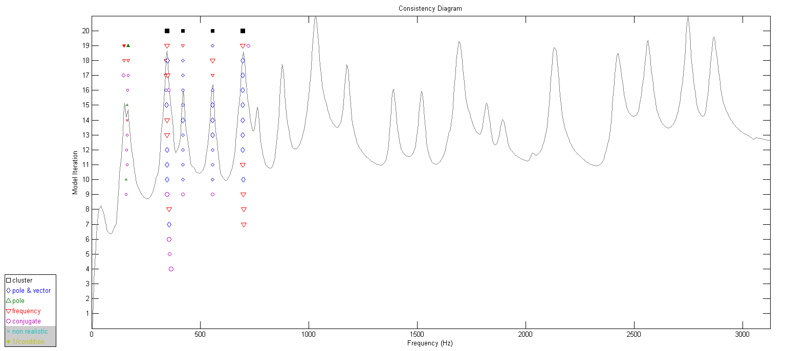
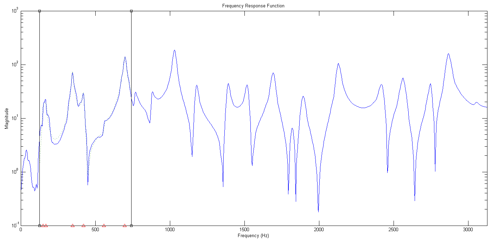
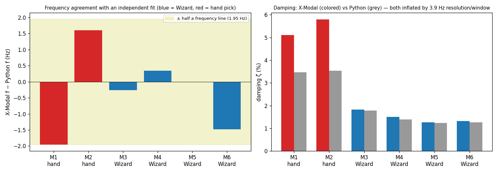
| Mode | Picked by | X-Modal f | Python f | Diff (Hz) | X-Modal ζ % | Python ζ % | Python MPC |
|---|---|---|---|---|---|---|---|
| 1 | hand | 149.83 | 151.79 | -1.96 | 5.11 | 3.46 | 0.997 |
| 2 | hand | 169.51 | 167.91 | +1.60 | 5.8 | 3.54 | 0.997 |
| 3 | Wizard | 346.69 | 346.95 | -0.26 | 1.82 | 1.79 | 1.0 |
| 4 | Wizard | 421.40 | 421.06 | +0.34 | 1.5 | 1.39 | 1.0 |
| 5 | Wizard | 557.11 | 557.12 | -0.01 | 1.26 | 1.24 | 1.0 |
| 6 | Wizard | 697.04 | 698.52 | -1.48 | 1.32 | 1.27 | 1.0 |
MPC (modal phase collinearity) near 1 = a clean real (normal) mode shape; lower = the shape is complex, usually because a close mode or noise is mixed in. Damping from both methods is inflated by the 3.9 Hz frequency resolution and the force/exponential window, so compare damping between modes, not as absolute material damping.
X-Modal PTD (polyreference time domain) fit of 8 FRFs over 125–742 Hz: for each mode a natural frequency, a damping ratio, and a mode shape (the residue at every hit point). Final values from the Group Manager:
| Mode | Shape | f (Hz) | ζ (%) | Picked by |
|---|---|---|---|---|
| 1 | mode 1 (all corners) | 149.83 | 5.11 | hand |
| 2 | mode 2 (diagonal twist) | 169.51 | 5.80 | hand |
| 3 | mode 3 | 346.69 | 1.82 | Wizard |
| 4 | mode 4 | 421.40 | 1.50 | Wizard |
| 5 | mode 5 | 557.11 | 1.26 | Wizard |
| 6 | mode 6 | 697.04 | 1.32 | Wizard |
CSV: 04_Wizard_and_Fit/P3_Accel_XModal_modes.csv.
Red wireframe = undeformed plate, black = deformed mode shape, isometric view, amplitude ×2.8. Each mode has a .mov (recorded in X-Modal), a looping .gif and a _iso.png still at peak deflection. X-Modal numbers modes 1, 3, 5 … because every mode is listed with its conjugate (negative-frequency) twin.
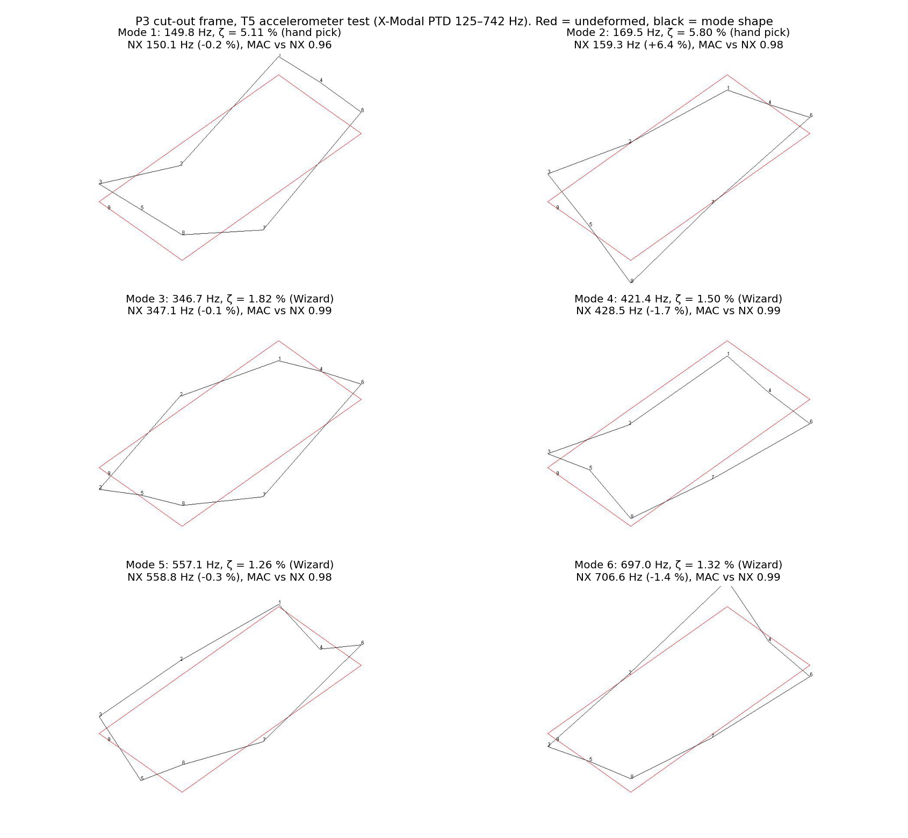
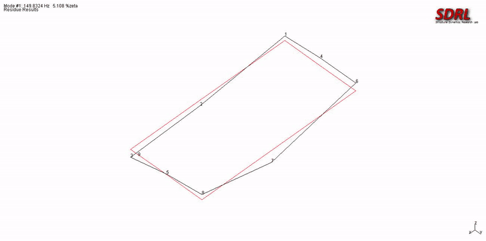
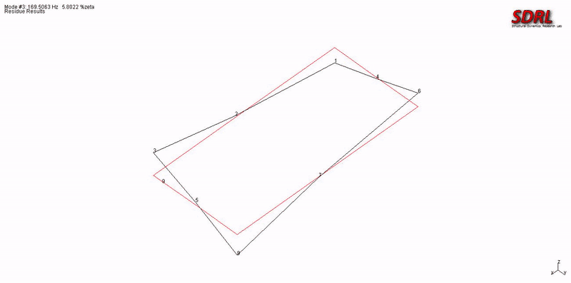
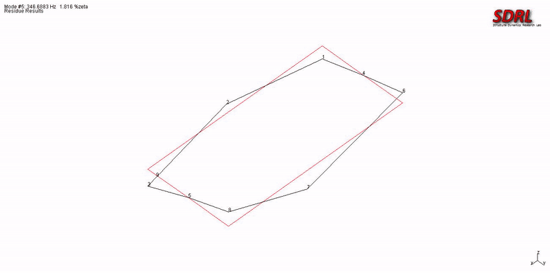
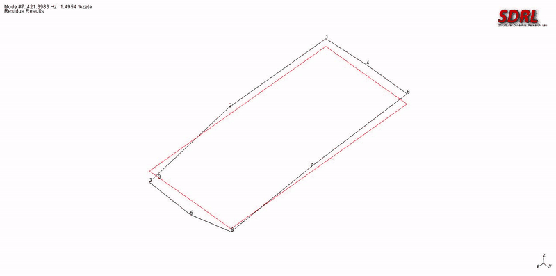
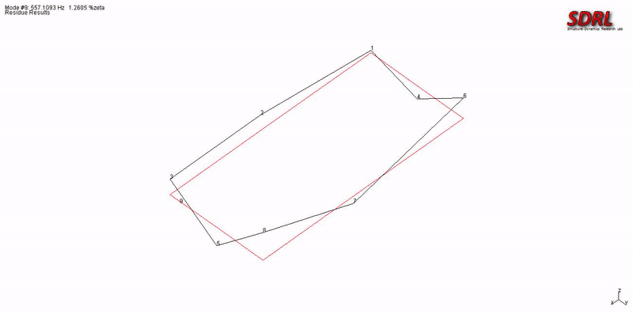
Modes 1 and 3–6 are within −1.7 % to −0.1 % of free-free NX, with MAC 0.96–0.99. Mode 2 (diagonal twist) is +6.4 % above free-free; the corner-spring model predicts +10.7 % for supports exactly at the corners, so the corner tennis balls are the likely cause. Note the off-diagonal MAC between test mode 2/6 and NX mode 6/2 (0.66–0.81): with only 8 points around the edge, those two NX shapes look alike at the hit points (NX cross-MAC 0.77). They are separated by frequency (168 vs 699 Hz), not by shape.
| Mode | Shape | Test f (Hz) | NX free-free | Δ vs free-free | NX corner springs | Δ vs springs | MAC vs NX |
|---|---|---|---|---|---|---|---|
| 1 | mode 1 (all corners) | 149.83 | 150.12 | -0.2 % | 161.0 | -6.9 % | 0.962 |
| 2 | mode 2 (diagonal twist) | 169.51 | 159.27 | +6.4 % | 176.3 | -3.9 % | 0.977 |
| 3 | mode 3 | 346.69 | 347.1 | -0.1 % | 355.5 | -2.5 % | 0.986 |
| 4 | mode 4 | 421.40 | 428.5 | -1.7 % | 431.0 | -2.2 % | 0.993 |
| 5 | mode 5 | 557.11 | 558.8 | -0.3 % | 563.8 | -1.2 % | 0.985 |
| 6 | mode 6 | 697.04 | 706.6 | -1.4 % | 712.0 | -2.1 % | 0.992 |
MAC (Modal Assurance Criterion) compares two shapes at the same points: 1 = same shape, 0 = unrelated. ≥ 0.9 is a confident match. The MAC uses the Python-fit shape (same FRFs X-Modal fitted) and the NX out-of-plane displacement at the nearest top-surface node.
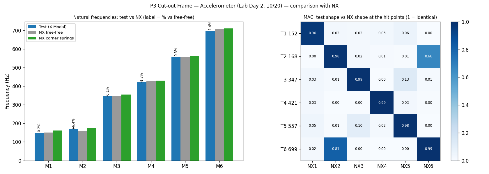
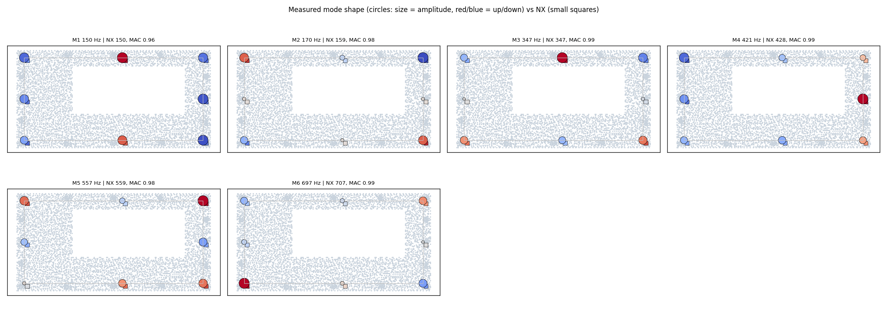
.mat file is an X-Modal UFCELLS cell array. Python (scipy.io.loadmat) pulled out the FRF (dataset 58, type 4), the coherence (dataset 58, type 6), the frequency spacing, the timestamp and the channel labels – the numbers in the raw-data tables and plots come straight from these files..unv) datasets 151 (header), 164 (units), 15 (nodes), 82 (tracelines) and 58 (FRFs) in the exact fixed-width format X-Modal accepts, and re-read every file with the pyuff library to confirm node numbers, labels and data..op2 result files (pyNastran), took the out-of-plane displacement of the top-surface node nearest each hit point, and computed MAC (Modal Assurance Criterion) between each measured shape and each NX shape..mov) were recorded inside X-Modal; Python/ffmpeg only cut each one into a 3-second looping GIF and picked the frame of largest deflection as the still image.Python never replaced X-Modal for the modal fit: every frequency and damping value reported as “X-Modal” was read from X-Modal's Group Manager.